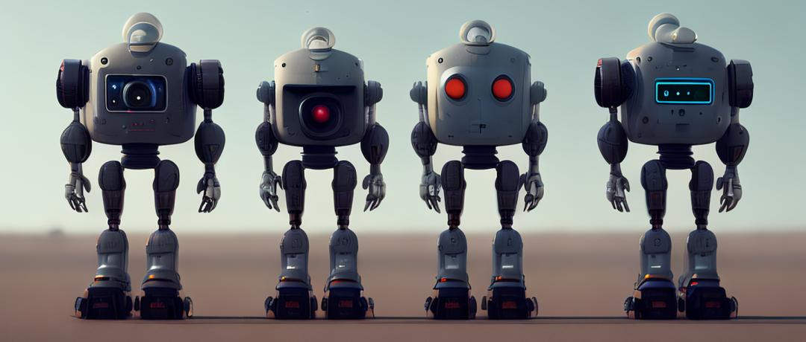

AIがゲームにおける応用のデメリット
AIが急速な進歩を遂げた今、ゲームにAIを導入することは不可避である。しかし、AIを駆使してゲームを豊かにする前に、気を付けながら、考慮すべきこともいくつか存在するのである。
AIによる意外な行動や錯誤
AIというと、リアルタイムの計算によって効率的に真実を真似して、さらに超える技術という印象が目に浮かぶ。しかしながら、大量な計算の中、プログラミングであれ宇宙線であれ、何らかの原因でエラーが出ることは避けられない。AIには従来のコンピュータより柔軟な対応ができるが、到底相手である人間を理解しきれないうえに、コマンドに絶対的な服従をするかも分からず、意外な発言や動きをするかもしれない。 映画フリー・ガイでは、主人公はもともと自己意識のないNPCではあったが、ある突然な出来事で自分が本当のプレイヤーと違うことに気づき、やがて自己意識を有する個体へと変わった。このように、AIは完全に人間の予想がつかないようなことをする可能性もある。映画で現れたのは良いほうの結果だが、現実だと邪悪なAIができたり、ウイルスを作り出したりするのもあり得ないわけでもない。そうすると、プレイヤー の体験をかえって悪くしたり、危機につながるかもしれない。
AI幻覚、ひいては社会的危機
サイエンスフィクションがテーマである作品には、よくキャラクターがAIが作ったフィクションの世界に飛び込み、冒険をする物語が出ている。リアルタイムでのレンダリング、即時性の満ちた会話、いままで人間によって作られるフィクションを超えて、想像を覆す人間の造物が創り上げた仮想の世界は、現実的でありながら現実ではなく、魔法と幻想が支配する神域。それが正にAIが人々を惹きつけるところである。
 しかし、AIが作るこの真実ではない場所で、人々は真実を見極める能力を失くし、本当の世界を諦める。そういう現象が普及すると、社会的危機を引き起こしかねない。たとえば、映画レディ・プレイヤーでは、主人公のいる時代では人々がゲームのオアシスに入り浸っている反面、現実世界は混乱に陥って、貧困人口が爆増。それはなぜかというと、ゲームの世界の達成感と壮大さは現実が与えられないものだからだ。
更に、AIによる意外な行動などで、更なる大混乱をもたらしかねない。
しかし、AIが作るこの真実ではない場所で、人々は真実を見極める能力を失くし、本当の世界を諦める。そういう現象が普及すると、社会的危機を引き起こしかねない。たとえば、映画レディ・プレイヤーでは、主人公のいる時代では人々がゲームのオアシスに入り浸っている反面、現実世界は混乱に陥って、貧困人口が爆増。それはなぜかというと、ゲームの世界の達成感と壮大さは現実が与えられないものだからだ。
更に、AIによる意外な行動などで、更なる大混乱をもたらしかねない。
創造力や人間性を欠けるAI
AIが素早く生成することができるが、それはあくまでも人間のデータベースを大量分析した結果に過ぎない。例としては、近年人気になってきた絵画生成AIやテキスト生成AI、たとえばStable DiffusionやChatgptなどである。絵画生成AIは大きな発展をして、今は一見自然に見えるような動画まで生成できるが、どうしても理解ができないものも少なからずある。たとえば、体操選手の動きである。
こういう異様な動きになっているのは、AIにはやはり三次元の現実世界を理解するのに困難だからだということが分かった。同じくテキスト生成AIは、一定の文書を分析して真似して文章を作り出すしかないので、人間のようにそれを内なる知識や感覚として取り入れるのではなく、単に言葉の積み重ねだけ作られるである。 中国の小説家である劉慈欣の小説「詩雲」では、宇宙人がただ李白の詩を超えるような詩を作るため、太陽系のエネルギーの大半を使い尽くしてまですべての漢字の並び替えを作った。しかし最終的宇宙人は失敗した。その理由は、その無数に近いほどの詩の中から李白の詩を超越したものを選びだすのは不可能だからだ。このように、ただの積み重ねでは本物の創造力にはならず、AIがまだこのレベルを超えられないので創造力が付きにくい。 なお、AIが作り出したものは同じパターン、同じデータベースによるものかもしれないので、同質化が避けられない問題だ。人間は美を追求する中、新たなスタイルや審美眼を受け入れつつあるが、それをAIはできなず、ゲームどころか、芸術の発展がとどまり、同質化な作品に埋没されるようになる。

参考文献
江口 悦弘, なぜAIは間違った回答をするのか――知っておきたい生成AIの基本(2023.08.18)
刘慈欣—诗云(2015.08.20)